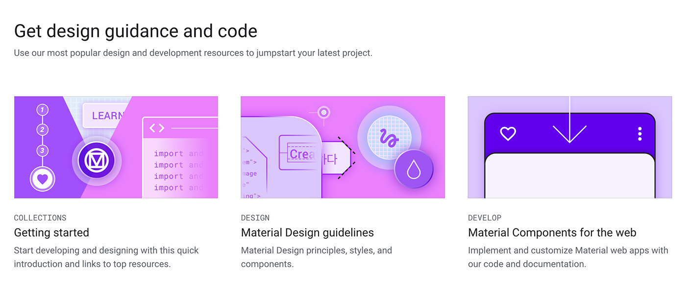
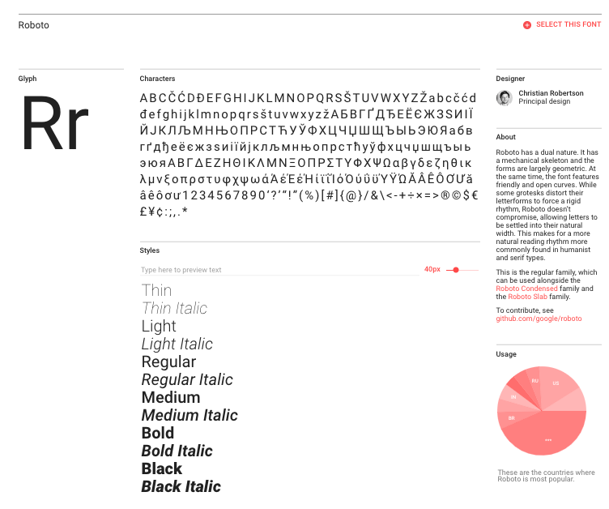

III. Typography
Roboto
Roboto was designed by Christian Robertson in 2011. This font is most famously known for being the system font for Android 4.0 "Ice Cream Sandwhich". It was later redesigned in 2015 for Android 5.0 "Lollipop". In much of our daily lives we see Roboto being used. For example, Gmail has switched from Sans-Serif to Roboto.
Usage:
I'm personally a fan of Roboto because of its modern look and how clean and slick the typeface looks. I think Roboto is a universally well rounded font to use because of the many font weights and styles it has whether that be a header or paragraph.
Roboto is also heavily used in material design, for example: Material Design by Google, uses the font entirely on its site. 
To use Roboto or learn more about it, check it out on Google Fonts. 